This module brings the powerful EBIOS Risk Manager methodology directly into your Odoo environment. EBIOS RM is the official French cybersecurity risk assessment framework developed by ANSSI.
Our product is the first 100% Tunisian solution fully dedicated to EBIOS RM.
Manage risks using a structured, scenario-based approach aligned with ISO 27005:2022 and ISO 31000.
Central dashboard providing quick access to all five workshops and a clear overview of the risk analysis workflow.
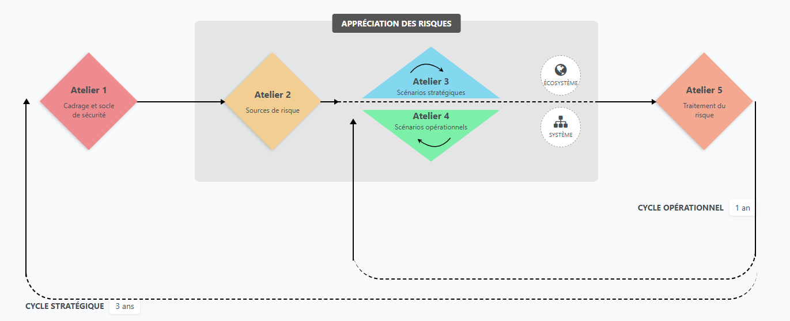
Define the scope of the study, identify business values, stakeholders, dreaded events, and establish the initial security baseline.
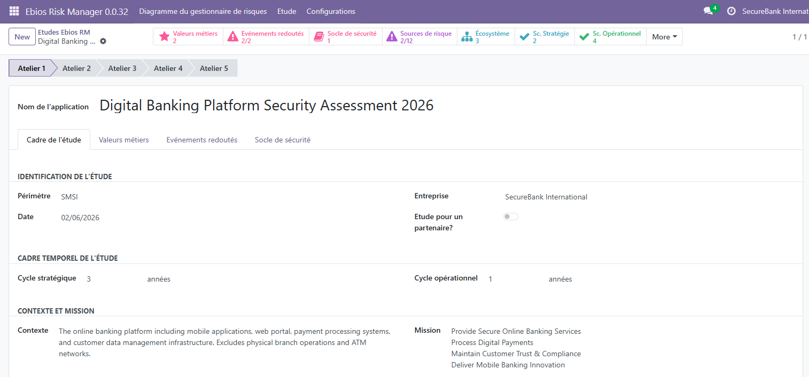
Identify potential threat actors and assess their resources, objectives, and motivations.
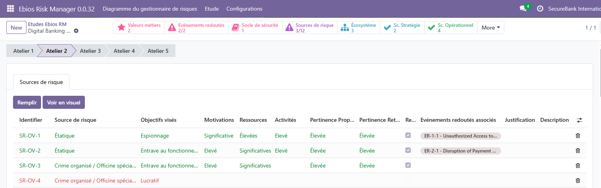
Visualize Risk Sources (SR) and targeted objectives (OV) to systematically qualify and prioritize risks.
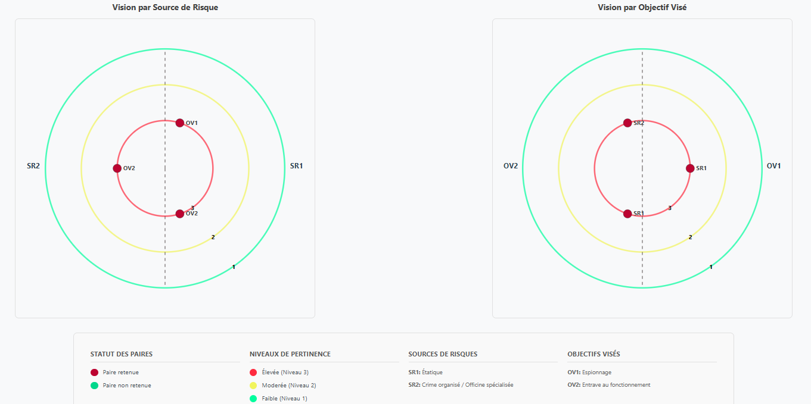
Analyze the ecosystem and construct strategic scenarios linking threats with business impacts.
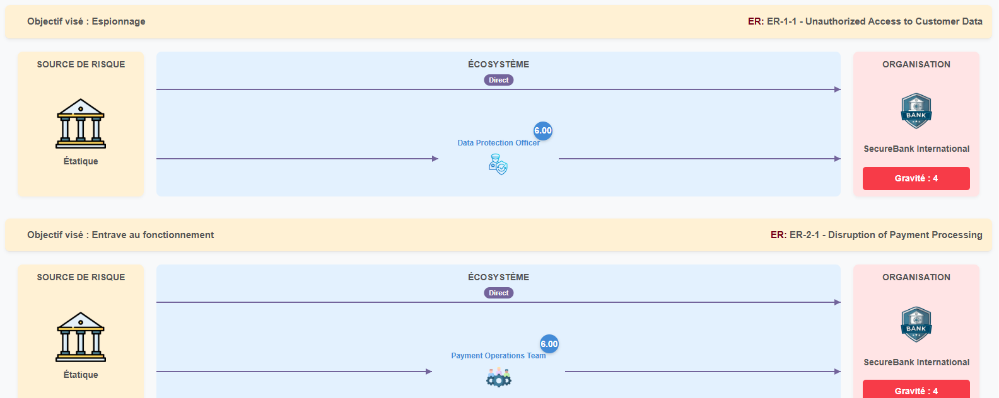
Manage stakeholders, partners, and suppliers and assess dependencies and trust relationships.
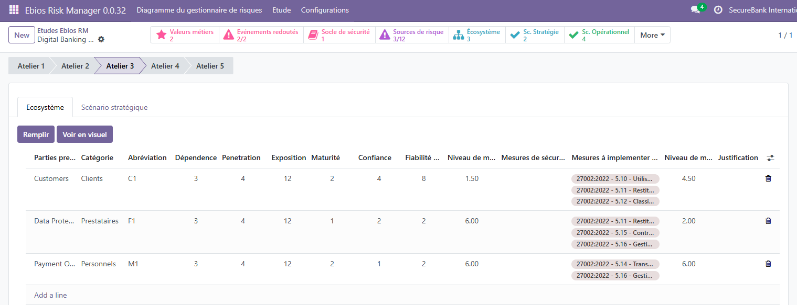
Visualize relationships and systemic exposure using Party-in-the-Place (PiP) cartography.
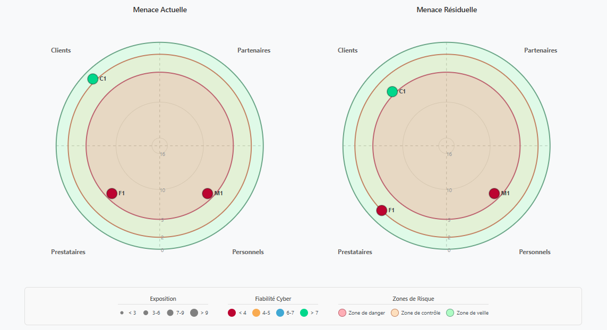
Manage and prioritize strategic scenarios in a structured and centralized list view.
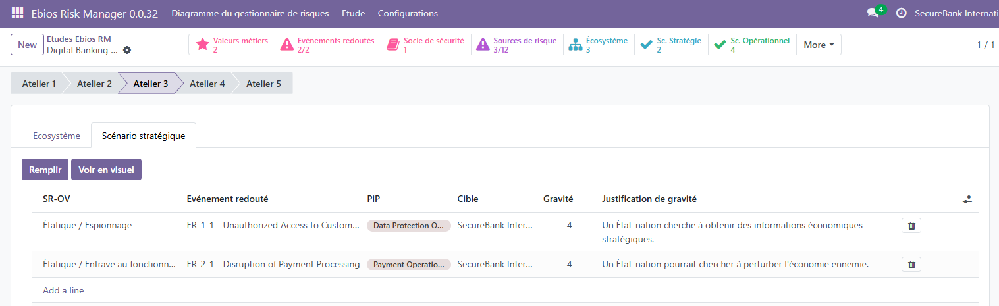
Detail technical attack paths using the Cyber Kill Chain to understand attacker progression.
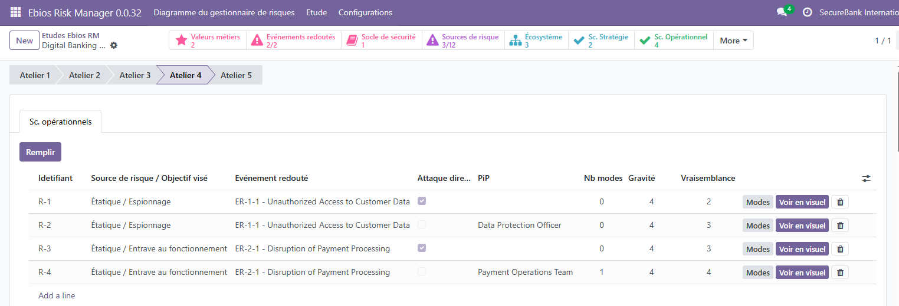
Build and visualize Cyber Kill Chains for each operational scenario.
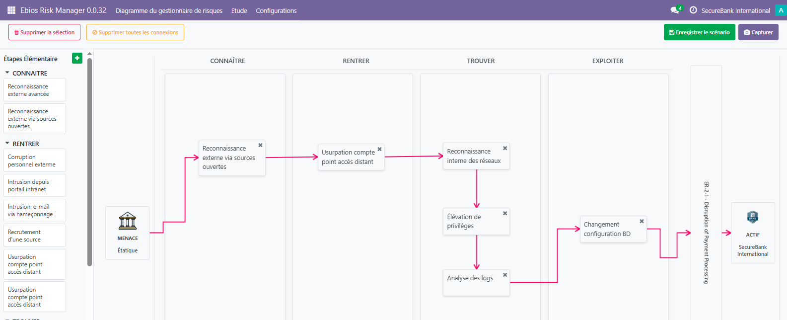
Define mitigation measures, assign owners, track progress, and calculate residual risk.
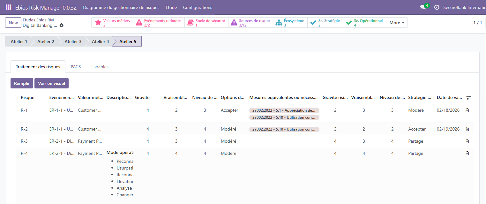
Visualize residual risks and generate PACS and DDA reports directly from the module.
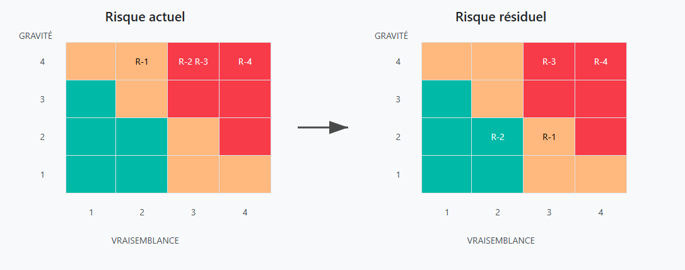
Quick Setup:
Navigate to EBIOS RM > Configuration after installation.
Define company parameters, risk scales, and security libraries (ISO 27001, etc.).
Configure Security Groups for Administrators and Risk Managers.
Odoo 18.0
For support, please contact us:
contact@digi-it.com.tn